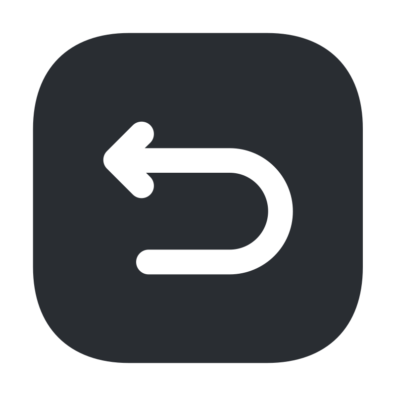

Tareas Pendientes
Cantidad {{ cantidad(true) }}
Tareas Terminadas
Cantidad {{ cantidad() }}
- 
Para Editar una tarea haz doble click. Para Guardar los cambios presiona "Enter" y en caso de querer Cancelar los mismos cambios, haz click fuera del campo de texto de edición